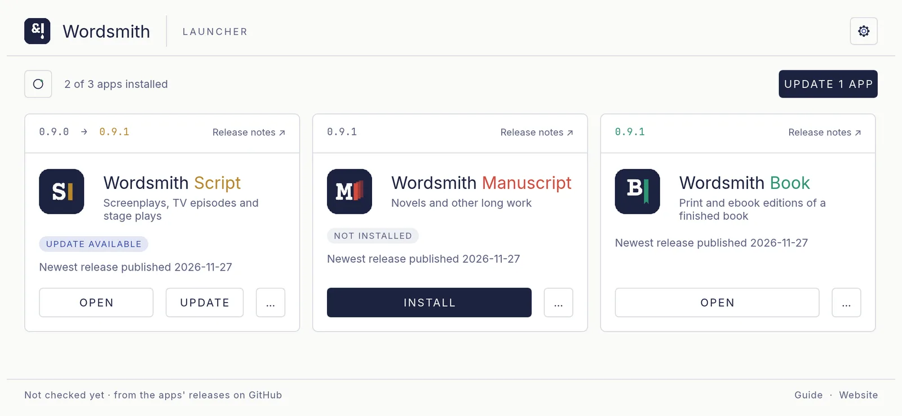

Wordsmith Launcher
One window for the whole desk.
Wordsmith Launcher is a small program for the three Wordsmith apps. It shows which of them are on your computer and at which version, installs the ones you want, keeps them up to date, opens them and removes them.

What it does
Install, update, open, remove.
You do not need the launcher to use the apps: each one can be downloaded by itself. The launcher does those steps for you.
Install what you need
Pick the apps you want. A screenwriter may only need Script; a novelist may want Manuscript and Book. The launcher fetches the right download for your computer.
Stay up to date
Each row says which version you have and which is the newest. One button replaces an app with its newest release; your documents and settings are not touched.
Checked before it is opened
Every download comes from the app's own releases on GitHub and is compared with the release's list of checksums. A file that does not match is not installed.
For your account only
Apps are installed where your system keeps a user's own programs. Nothing asks for an administrator's password.
From a terminal too
The same work as commands: list the apps, install one, start one, remove one.
Same promises
No account, no tracking. The launcher talks only to GitHub, for the releases, and the checks it makes by itself can be turned off.
Not yet
What the launcher does not do.
These are planned, and not built: a list of your recent screenplays, novels and books from all three apps; starting a new document in the right app; and guides inside the launcher. Today the launcher installs and opens the apps, and each app keeps its own recent documents.
Download
Get Wordsmith Launcher.
Version 0.9.0 is a preview, published on 27 November 2026: it is here to try the downloads and the updates before 1.0. You do not need the launcher to use the apps; each one can be downloaded by itself.
The first time you open it
The apps are not signed with a paid developer certificate, so macOS and Windows ask before they open one for the first time.
- macOS: open the app once and close the notice. Then open System Settings, choose Privacy & Security, and click Open Anyway.
- Windows: on the “Windows protected your PC” notice, click More info, then Run anyway.
Free, and yours to check
Wordsmith Launcher costs nothing and needs no account. Downloads come only from the app's own releases on GitHub. Every file of version 0.9.0 and their checksums.
The code is open source. To build it yourself, follow the README beside its code.
Have ideas for the launcher?
It is small on purpose, and it is new. Tell us what would help you, or what went wrong.